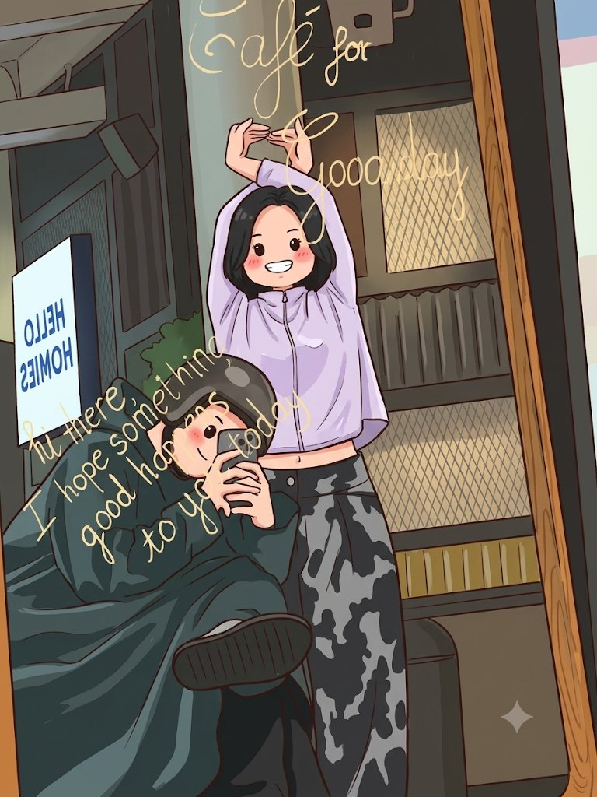

Hà Nội — Ninh Bình · 18—22.11.2026
Năm ngày cuối thu
phương Bắc
Hành trình của Khôi & Thư: núi đá vôi, những con đò xuyên hang và một buổi sáng cà phê bên Hồ Gươm.
00Ngày
00Giờ
00Phút
00Giây
tới giờ cất cánh · VN254
Hành trình của Khôi & Thư: núi đá vôi, những con đò xuyên hang và một buổi sáng cà phê bên Hồ Gươm.
Một chuyến đi được lên kế hoạch từng giờ — để hai người chỉ việc tận hưởng. Trang này là lịch trình trong chuyến đi, và sẽ trở thành album sau khi trở về.
VN254, SGN T3 → HAN T1
Hội ngộ ở Hà Nội lúc nửa đêm

Chapter II
Nơi những dãy núi đá vôi mọc lên từ đồng lúa, và dòng sông chảy xuyên qua lòng núi.
Kéo, vuốt hoặc dùng thanh trượt bên dưới để xem từng điểm đến. Bấm ảnh nhỏ ở góc để đổi góc chụp.
Ảnh thực tế của từng điểm, bảng màu và gợi ý trang phục cho Thư & Khôi để lên đồ hợp cảnh. Chạm vào ảnh để xem toàn màn hình, vuốt để chuyển.
Ảnh từ Unsplash, Pexels (giấy phép miễn phí) và Wikimedia Commons — tên tác giả ghi trong từng ảnh.
Vé ghi: có mặt trước giờ bay 90 phút, quầy thủ tục đóng trước 60 phút. Lịch trình để dư: tới sân bay trước khoảng 2 tiếng.
Sau chuyến đi, ảnh thật của hai người sẽ được đặt vào từng ô. Có thể xem thử ngay bằng ảnh trong máy — ảnh chỉ hiển thị trên thiết bị này, không được tải lên.